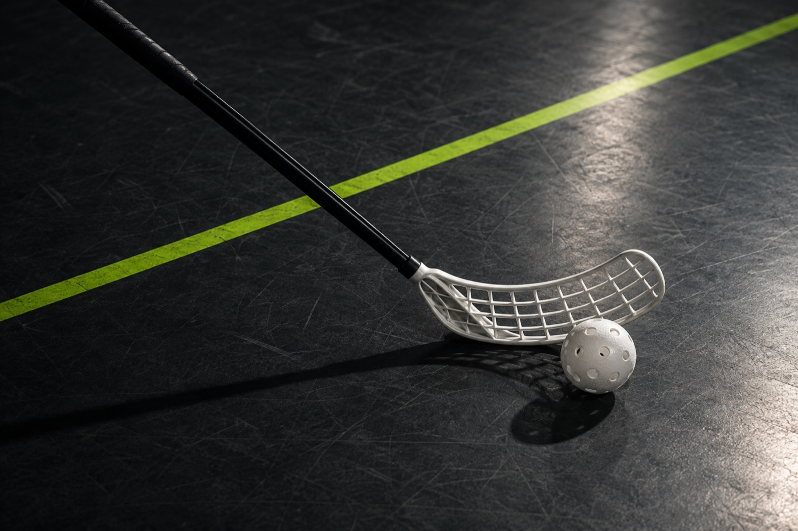

01 / RESTORATION & STORYTELLINGLegacy
Legacy
Garage 26.
Getting my hands dirty with a 1968 Chevrolet Corvair. Learning its engineering, uncovering its history, and sharing the people behind the project.
STUDENT / BUILDER / ATHLETE
BASED IN CALIFORNIA
Curious about how things work.
Even more curious about
what they could become.
Engineering, ideas, and everything
that keeps me moving.
From Hangzhou to Canada to California, I’ve learned to find my feet in new places. Now I’m finding my way through engineering, entrepreneurship, and the occasional very stubborn car part.
A classic car. A useful website.
A workbench full of possibilities.
Getting my hands dirty with a 1968 Chevrolet Corvair. Learning its engineering, uncovering its history, and sharing the people behind the project.
Robots, servo systems, and ideas that get better with every version.
A practical guide to everyday life for people starting somewhere new.
Building things is only half the story.
The other half usually involves a team,
a ball, and one more practice.

FLOORBALL / CONCEPT IMAGEYEARS OF FLOORBALL
Floorball has taught me how to read a situation, trust a team, and keep showing up. Those lessons travel with me, on and off the court.
Basketball · Soccer · Badminton · Golf · Tennis · Rowing · Squash
AND IN BETWEEN IT ALL
LEGO, writing, and following an idea just to see where it goes. Some things don’t need a bigger reason.